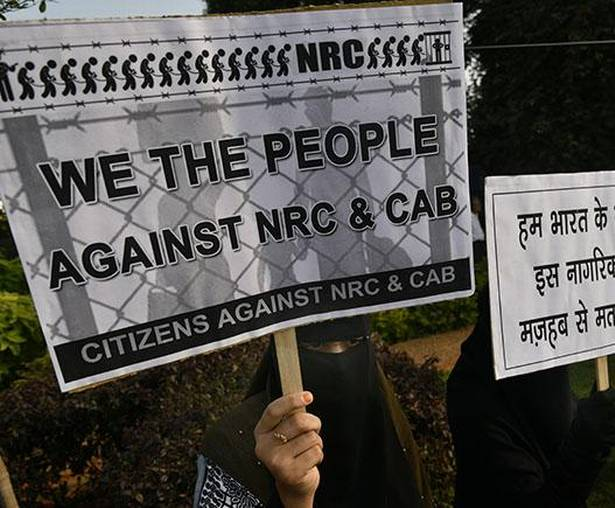

Duty on Us

Long back in 1983 a great man from India said "I am proud to belong to a nation which has sheltered the persecuted and the refugees of all religions and all nations of the earth" that great man was our beloved Swami Vivekananda but today it looks like we have abandon his teaching and moved towards narrow minded state; By the passage of controversial Citizenship Amendment Bill in this winter session by both the housed we have aloof ourselves from the Idea of Vasudhaiva Kutumbakam (The word is one family); we have certainly created history by passing this bill but time will prove how disastrous this bill is.
What is Citizenship (Amendment) Act ?
In simple terms the act provides all persons belonging to Hindu, Sikh, Buddhist, Jain, Parsi or Christian community from Afghanistan, Bangladesh or Pakistan, who entered into India on or before the 31st day of December, 2014, shall be treated as Indian citizens however this act is not applied to tribal area of Assam, Meghalaya, Mizoram or Tripura as included in the Sixth Schedule to the Constitution and the area covered under "The Inner Line" notified under the Bengal Eastern Frontier Regulation, 1873.' Notably the act exclude Muslims, Jews, Atheist from these countries. The passage of this bill started a nationwide protest and epicenter of these protest is North East especially Assam, the act have rekindled the anti-foreigner sentiments of North-East and it is also created an atmosphere of fear for Muslims across the nation as once the NRC is implemented it will be only Muslims who will become stateless and they might be contained in detention centers
Is this Bill constitutional ?
The reason for the protest is very clear i.e. it violates the one of the principle of which the constitution is laid i.e. Secularism which is a part of Basic structure of the constitution envisaged in the Kesavananda Bharati v. State of Kerala; this act divides the people on the basis of religion which is violation of article 14 of the constitution. Article 14 :
State shall not deny to any person equality before the law or the equal protection of the laws within the territory of India Prohibition of discrimination on grounds of religion, race, sex or place of birth. This provision confers rights on all persons whether citizens or foreigners.The term equal protection of law when placed for illegal immigrants in this act seem to violate as it discriminates on the basis of religion. The Supreme Court held that where equals and unequals are treated differently, Article 14 does not apply. While Article 14 forbids class legislation, it permits reasonable classification of persons, objects and transactions by the law. As rightly quoted by the Home Minister "Amit Shah" that article 14 provides means for classification But when he tried to back the bill on the basis of classification he omits the details needed for the classification i.e. it should not be arbitrary, artificial or evasive. Rather, it should be based on an intelligible differential and substantial distinction. There are three test for reasonable classification:
1. Classification must be founded on the intelligible differentia which distinguishes persons or thing that are grouped together from others left out of the group : The act classifies people on the basis of religion but paragraph 2 of Statement Of Objects And Reasons classifies people on the basis of religious persecution but nowhere in the act there is term religious persecution; it assumed all the minorities of the stated countries living in India as persecuted.
2. Differentia must have a rational relation to the object sought to be achieved by the act : the objective of this act is to give citizenship to the people who have been persecuted on the basis of religion but it doesn’t include the religious minorities such as Ahmadiyya community, Shia who have also been persecuted in the given countries.
3. Classification should not be arbitrary : The question raised is why only these 3 counties are selected while we don’t even have any numbers on the persecution on the basis of religion in the neighboring countries; The home minister in his statement said these nations have been selected because they have state religion in there constitution ie Islam but having state religion doesn’t indicate that there minorities are persecuted If state religion is really the base for selection then Act should have also included Sri Lanka as it has state religion Buddhism and there also religious minorities are targeted and like of such countries include Myanmar.
Protest in North East :
The protest in the north east reminds us back to gloomy period between 1978-1985 where mass protest were held to sage guard the cultural identity and uniqueness of the people of Assam. According to Assam accord clause 5 the foreigners were classified under three heads for identification and differential treatment Two dates are of significance in the Assam Accord: 1st of January 1966 and 24th of March 1971, so in simple terms whoever comes after midnight of 24th March 1971 shall be an illegal immigrant in Assam and according clause 6 constitutional, legislative and administrative steps will be taken by the Centre to "protect, preserve and promote the cultural, social, linguistic identity and heritage of the Assamese people".
The Citizenship Amendment Act; the protesters say, is a deliberate violation of clause 6; The central government has betrayed us by stabbing on our back by implementing CAA by which 1.1 million non-Muslims residing in Assam, majority of them will be granted citizenship. If the act is not repealed it will affect the very people it is trying to help because the nature of protest is turning xenophobic towards them even though majority of parts in north east is excluded in the bill people feel that it is not practical to implement such an exception.
Protest by Muslims :
In case of Muslim community the Citizenship Amendment Act should be seen with the lens of NRC, The Home Minister says that CAA is different and NRC is different but when we see through his porous argument CAA+NRC is nothing but a filter to exclude Indian Muslims and make them stateless.
NRC is to find illegal immigrants then why Indian Muslims will be excluded ?
The aim of the NRC is said to be to identify and evict illegal migrants, but this is where the BJP government — and, indeed, any government — faces a problem. How is the state to detect who is illegal and who is not? And how is the Indian citizen to prove that he or she is one? If we go by what happened in NRC in Assam, only having a driving licence, passport, voter ID or Aadhaar card, or even all of those documents, will prove nothing unless you were born a very long time ago.
There are nearly 1.9 million people left out in the NRC which was conducted under the supervision of Supreme Court out of that 1.9 million nearly 1.1 million people are non-Muslims, But now due to CAA they will be granted citizenship but Muslims won't get. Though NRC will be for all Indians but the end result is specifically targeting Muslims.
If you are not old enough to produce proof of your own presence as an Indian citizen through documentation from before the cut-off date, you will have to prove that your parents and grandparents were Indian citizens by that date. How do you prove to the government clerk that your parents were there, and that they are your parents and not someone else’s? Indian Muslims coming from sub altern communities and who are landless will face a great amount of problems in order to prove their citizenship. The most difficult part of the problem in many cases would be for the people to prove that their ancestors were their ancestors. In rural India, where people used to be born at home and not in hospitals, there were no birth certificates, A large of the population was illiterate and did not have any school or college certificates. If you are able to prove then it's your luck otherwise you are in trouble. The trouble is very evident from the NRC in Assam for ex: A former Army officer and Kargil War veteran Mohammed Sanaullah, who was declared a foreigner and detained by police in Assam. When war veteran is not spared how can people who fight daily to survive will prove their citizenship.CAA+NRC will also effect the Tamil refugees residing in the Tamil Nadu refugee camps; though there are non-Muslims though they are persecuted they will not be granted citizenship just because they are from Sri Lanka.
When asked to Home Minister why only these countries have been selected at once instance he said the population of minority in these countries is decreasing so it is assumed they are persecuted he was driving home to the point that India is home to all such refugees except Muslims. This Idea of such India goes very against the principles of Constitution.
When asked to Home Minister what is the necessity of this Bill he said to give the people there right by correcting the wrong done in 1947, he accused Congress on creating the nation on the basis of religion but it appears his history is very weak in this regard, to remind him it was his and his party ideologue Veer Savarkar, while addressing the 19th session of Hindu Mahasabha ay Ahmedabad in 1937 declared that there are two antagonistic nations living side by side in India. Further the two nation theory was cemented by Mohammed Ali Jinnah in 1940; Indian Nation Congress and it stalwarts which include Sardar Valla Bhai Patel, Mahatma Gandhi, BR Ambedkar, Nehru vehemently opposed the creation of a nation on the basis of religion. But today Mr Shah is doing exactly opposite to what we are known for.
The implementation of CAA is threat to internal security also as they can be many people in disguise who will get citizenship. And implantation of NRC will break the basic structure of our Nation and eventually we will weaken our relations witch Bangladesh and North eastern states which will significantly hamper the 'Act East Policy'
Nearly 1400 crores were spent on the NRC in Assam alone, Pan India NRC will incur thousands of crores with very little gain and lot of loss. The final result will be that state government officials will be burdened with extra work day and night for years, thousands of crores of rupees will be spent, and poor Indians across the country in their millions will be left running from pillar to post, but eventually nothing will come out of it.
We the people have solemnly resolved to constitute India into a secular nation and now it is our duty also to maintain the secular nature of our beloved country; We all are Indians and we will continue; we need to find other way to detect illegal immigrants and we already have a standard operating procedure to grant long term visas to refugees who are persecuted on the basis of religion; so why was the need of such a bill ?
In order of helping a small number of people Mr Shah has laid a deadly path for the Muslims and stabbed the people of North East by betraying them what they were told.
We the people have to fight against any such Act to safeguard our Nation; It is incumbent upon us to perform our duties if we really love our nation and rever the freedom struggle.